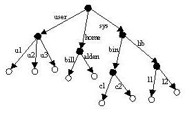

Introduction
This page contains an abridged version of the Naming Service specification
edited by the Object Management Group, Inc.(OMG). The objective of this document is to give the users of SALOME
application a brief overview of the Naming Service implemented in SALOME.
A complete version of this document can be found here.
Table of contents
1. Overview
This chapter presents the OMG Naming Service and explains how the Naming Service can be used to decouple clients and servers by
providing an external reference exchange mechanism. The chapter also covers how to solve the bootstrapping problem for clients and
servers by controlling their configuration.
In practice, copying stringified references from a server to all its clients is clumsy and does not scale. The Naming Service provides a way
for servers to advertise references under a name, and for clients to retrieve them. The advantages are:
- Clients and servers can use meaningful names instead of having to deal with stringified references.
- By changing a reference in the service without changing its name, you can transparently direct clients to a different object.
- The Naming Service solves the bootstrapping problem because it provides a fixed point for clients and servers to rendezvous.
The Naming Service is much like a white pages phone book. Given a name, it
returns an object reference.
The terminology used in description of NamigService is the following:
- A name-to-IOR association is called by a name binding.
- Each binding identifies exactly one object reference, but an object reference
may be bound more than once (have more than one name).
- A naming context is an object that contains name bindings.
The names within a context must be unique. Naming contexts can contain bindings
to other naming contexts, so naming contexts can form graphs. Binding contexts
in other contexts creates a naming graph — a directed graph with nodes
and labeled edges where the nodes are contexts. A naming graph allows more
complex names to reference an object. Given a context in a naming graph, a
sequence of names can reference an object. This sequence of names (called
a compound name) defines a path in the naming graph to navigate the
resolution process. Figure 1-1 shows an example of a naming graph.
- Binding a name to a context means to add a name–IOR pair to a context.
- Resolving a name means to look for a name in a context and to obtain the
IOR bound under that name.

Figure 1-1 A Naming Graph
Back to the contents
2. SALOME Naming Service
2.1 Introduction
The SALOME Naming Service is a kernel function which supplies a name directory
hierarchy for pointing out CORBA objects. This name directory hierarchy allows,
from symbolic names, to dynamically find the references of distributed SALOME
objects, without information about their location. SALOME objects which can
be reached via the naming service are:
- The kernel services
- Containers
- SALOME components instances
The name directory hierarchy in SALOME represents a graph of directories containing
symbolic associations name-reference on objects. (It has been described in the
previous section)
2.2 Definitions
- Directory
- Context of names containing symbolic associations name-reference on objects.
- "/"
- Character used in SALOME to separate two names of a directory
- Access path
- List of names (separated by "/" character representing the path to be followed
in the graph to reach an association name-reference (the last name in the sequence).
Note:An object can be referenced by several symbolic names
in one or several directories.
2.3 Partition of SALOME name directory hierarchy
The hierarchical organization of the SALOME name directory is not completely frozen .
Because the framework allows the simultaneous opening of several studies, the following levels are determined:
/Kernel
/Container/
/Component
2.4 SALOME name directory persistence
During a SALOME session, stopping a server in charge of the Naming Service
doesn't imply the loss of the contents of the SALOME name directory hierarchy.
A backup file is produced and can be used to restart the Naming Service. So,
one can recover the state of the SALOME name directory hierarchy at restart
time. During such breakdown, every call to any function of the Naming Service
invokes an exception of type Unreachable service.
2.5 SALOME Naming Service features
Usage and administration of the name directory hierarchy is realized by means of the following functions:
- Recording and recovering of the reference of an object
- Searching for a symbolic name
- Creating of a directory, reading and modifying of the current directory
- Destructing of a symbolic name and a diredtory
The access path used in these functions can be defined, either from the root, or from any
directory of SALOME name directory hierarchy.
In SALOME there is s standard interface of Naming Service, and any user can
use it for binding and finding objects. How to use it, it's possible to find
in any CORBA documentation. However in SALOME there is an additional layer which
hides calls to standard interface.
The precise API reference for these functions you can find here.
Here is a short list of public methods which are used for working with the SALOME Naming Service:
Register
- Method which register object reference in the naming service with given name. It makes assignment between IOR and stringified name.
Then it's possible to get object reference from name using "Resolve" method.
Resolve
- Try to obtain object reference from name. It's necessary before publishing
IOR in the Naming Service by Register method.
Find
- The purpose of this method is to research a name from the current directory
of the naming service. Then if there is occurrence the naming service changes
directory to go to the directory where last occurrence is found.
CreateDirectory
- This method allows to create one or several directories in the current directory
ChangeDirectory
- Moves the current directory. The current directory is moved to the root directory if the input parameter Name is "/".
CurrentDirectory
- Method allowing to get the current directory.
list
- Method allowing to list and print the whole context beginning from the current context.
list_directory
- Method to get all contexts contained in the current directory.
DestroyName
- Destroys a symbolic name-object reference association.
DestroyDirectory
- Destroys an empty directory.
Back to the contents